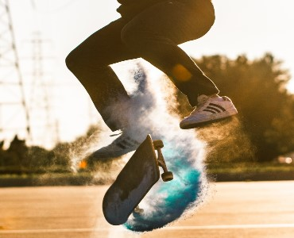

Home

Flip (Kickflip)
Wagner Nunes (Zorba), BRA
Manobra: Flip. Flip ou kickflip é uma manobra simples de dificuldade nível baixo. O skate gira abaixo dos pés e é executado com o pé da frente impulsionando para frente e para fora.
360 Flip (Kickflip)
Kelvin, BRA
Manobra: 360 Flip. É uma manobra simples de dificuldade média. O skate gira abaixo dos pés e é executado com o pé de trás rotacionando para o lado (movimento de varial) e o pé da frente chuta um flip
Feeble grind
Leticia Bufoni, BRA
Manobra: Feeble grind. Manobra simples de dificuldade média. O skate desliza no corrimão com o truck de trás, o corpo fica projetado para cima do obstáculo e requer equilíbrio.